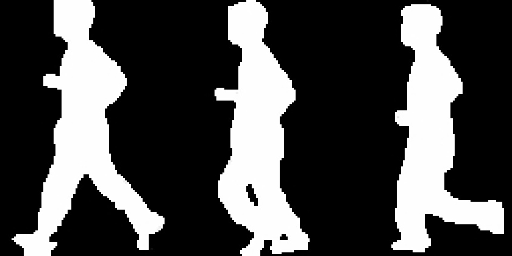
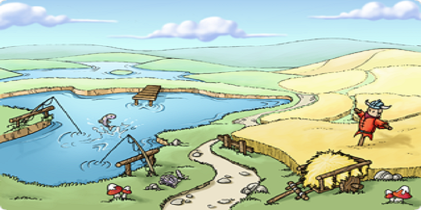
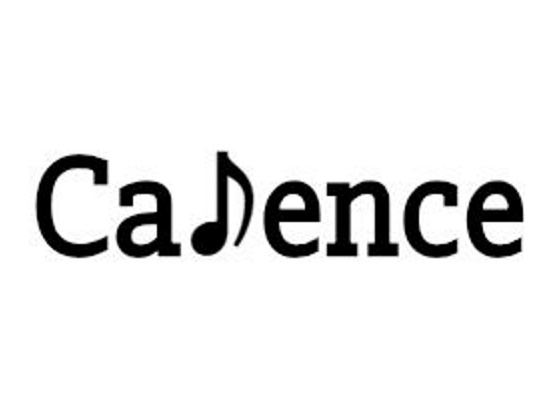

Hello!
I'm a 4th year undergraduate at the University of Maryland, College Park, studying Computer Science and Mathematics.
I'm currently focused on machine learning theory and have done (or am engaged in) work in computational economics, natural language processing, digital humanities, and computational social science.
Projects
Academic Projects

dlab@EPFL

UMD-CAAR
Team AIMAR
Metaphor Detection
EMA for MusicXML

Human Gait Recognition
TJHSST Projects
Cemetery Data Analysis
Personal Projects

Judgement of the Sun

Travian Tools

Rhythm Transcription